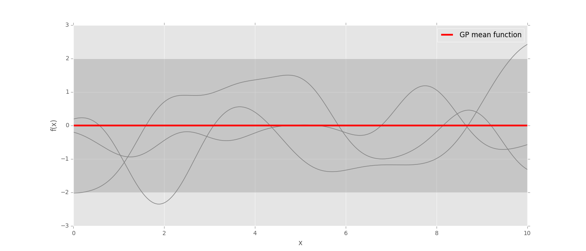

Gaussian Processes
NYDSSG presentation by: Eric Xu
November 2, 2015 @Aol
Hi, I'm Eric
- Rails developer
- Data science course at General Assembly
- Data science and engineering at Outbrain

Agenda
- What is a Gaussian process?
- GP in the kitchen
- GP for hyperparameter optimization
Which one is a Gaussian distribution?
They all are!
Gaussian Distribution
Probability density function:
$p(x)={1\over\sigma{\sqrt{2\pi}}}e^\left(-{(x-\mu)^2\over{2\sigma^2}}\right)$
Gaussian Distribution Properties
- Symmetric around the mean
- The mean, median, and mode are equal
- ~68% of the distribution area falls within 1 std of mean
- ~95% within 2 std of mean
- Defined by the mean and standard deviation
Gaussian Process
Definition: A Gaussian process is a collection of random variables, any finite number of which have a joint Gaussian distribution.
-
Gaussian distribution:
- A probability distribution is a function that describes how likely you will obtain the different possible values of the random variable.
-
Gaussian process:
- One can think of a Gaussian process as a distribution over functions.
Another way to think of GP

Gaussian Process
- Physical quantities, such as height, can be represented with a Gaussian process.
- Here, heights from the Mt. Eden volcano are predicted using observed measurements.
- Inference in the Gaussian process can explain properties in between sampled points.
GP in Geostatistics (aka Kriging)
- Named after Danie G. Krige
- Pioneered the field of geostatistics by applying Gaussian process regression.
- Sought to estimate the most likely distribution of gold based on samples from a few boreholes.
1-dim data interpolation using a Gaussian Process
Gaussian Process Applications
- Regression
- Classification
- Metric optimization
MOE: "Metric Optimization Engine" by Yelp
MOE is an efficient way to optimize a system's parameters, when evaluating parameters is time-consuming or expensive.
- Optimizing the design of an engineering system (an airplane, the traffic network in a city, a combustion engine, a hospital).
- Optimizing the parameters of a real-world experiment (a chemistry, biology, or physics experiment, a drug trial).
- Optimizing tunable parameters of a machine-learning prediction method.
The Eggsperiment
How long does it take to boil the perfect soft boiled egg?
The Eggsperiment
Optimize boiling time using MOE's gp_next_points_kriging API:
{
"domain_info": {
"dim": 1, // number of features to tune
"domain_bounds": [
{
"max": 10.0, // max boiling time
"min": 0.0 // min boiling time
}
]
},
"gp_historical_info": {
"points_sampled": [ // a list of boiling times and our assigned scores
{
"value_var": 0.01,
"value": 4, // our 'tastiness' score after boiling for 5 minutes
"point": [ 5.0 ] // first boiling time observed
}
]
},
"kriging_noise_variance": 1e-08,
"std_deviation_coef": 0.0,
"num_to_sample": 1
}
The Eggsperiment
How long does it take to boil the perfect soft boiled egg?
Hyperparameter Optimization
sklearn.neighbors.KNeighborsClassifier( n_neighbors=5, weights='uniform', algorithm='auto', leaf_size=30, p=2, metric='minkowski', metric_params=None)
- High level settings pertaining to a machine learning model that govern how a model performs
- Grid search
- Random search
- Bayesian optimization (makes sense if calculating the prediction error for one choice of the parameters takes a long time, which might happen because the prediction method is complex and takes a long time to train, or because the data used to evaluate the error is huge.)
Hyperparameters:
Common techniques:
Hyperparameter Optimization
An example from the SigOpt blog: tuning machine learning models
| Gradient Boosting Classifier hyperparameter | Value range |
|---|---|
| learning_rate | 0.01-1.0 |
| n_estimators | 20-500 (int) |
| min_samples_split | 1-4 (int) |
| min_samples_leaf | 1-3 (int) |
Hyperparameter Optimization
An example from the SigOpt blog: tuning machine learning models
| Public dataset | Description |
|---|---|
| Poker hands | The poker dataset tries to classify poker hands given a set of 5 cards; we’ll train on 10,000 random poker hands and test using a different 10,000 random poker hands. |
| Connect-4 | The connect-4 dataset classifies the winner of a game of Connect Four given a game state; we’ll train on 60,000 games and test on 7,557 games. |
| USPS zip codes | The USPS dataset tries to classify handwritten digits in zip codes; we’ll train on 7,291 images and test on 2,007 images. |
| Satellite images | The satimage dataset attempts to classify soil types using satellite images; we’ll train on 9,539 images and test on 1,331 images. |
Hyperparameter Optimization
An example from the SigOpt blog: tuning machine learning models
| Classifier, Dataset | Speed: SigOpt vs Grid | Accuracy: SigOpt vs Grid |
|---|---|---|
| GBC, connect-4 | +1914% | +0.1% |
| GBC, poker | +379% | +0.5% |
| GBC, usps | +838% | +0.4% |
| GBC, satimage | +6000% | +0.0% |
Hyperparameter Optimization
An example from the SigOpt blog: tuning machine learning models
| Classifier, Dataset | Speed: SigOpt vs Random | Accuracy: SigOpt vs Random |
|---|---|---|
| GBC, connect-4 | +1342% | +1.6% |
| GBC, poker | +3% | +0.5% |
| GBC, usps | +138% | +0.6% |
| GBC, satimage | +0% | +0.0% |
Other Bayesian Optimization Libraries
Gaussian Process Resources
- Gaussian Processes for Machine Learning (textbook)
- Gaussian process on SciKit-learn (regression and classification examples)
- Gaussian process summer schools (video lectures)
- George (Python library for GP Regression)